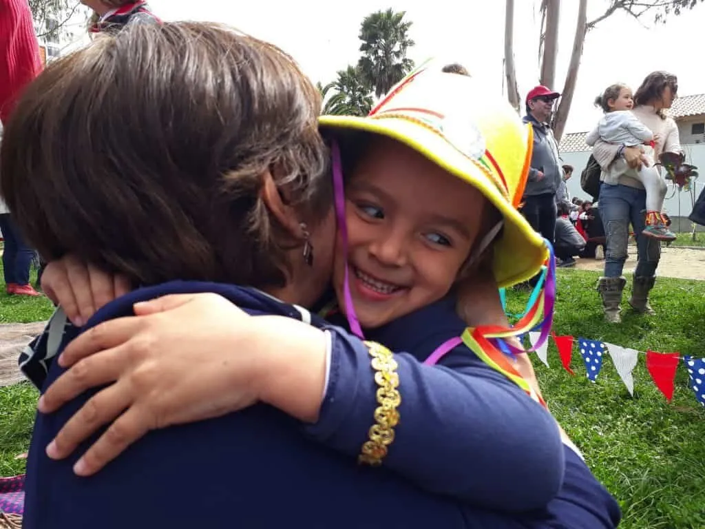

La palabra Sankalpa, viene del sánscrito y significa intención, propósito y determinación. Es la creación de una frase positiva que se asume con compromiso a una misma y nuestro entorno para crear una realidad responsable. La repetición de aquellos sankalpas modifican nuestros patrones mentales y son capaces de intervenir en el consciente e inconsciente para trabajar diversos aspectos de nuestra vida.
El lenguaje genera cambios a nivel cerebral, modificando nuestra percepción. Estas palabras viajan al lóbulo parietal, que es la zona que determina la manera que nos vemos a nosotros mismos. Ellas nos describen y transforman nuestra realidad, conteniendo energía en su significado y develando la importancia de aprender a generar un lenguaje responsable con nosotras mismas y nuestros niños y niñas.
Nuestro lenguaje es la representación de nuestro mundo interior, palabras negativas liberan cortizol, la hormona del estrés versus las palabras positivas, las cuales activan la corteza prefontal, zona encargada de las decisiones emocionales y de la imagen que tenemos de nosotros mismos, favoreciendo dichas acciones con un toque de dulzura y amor puro.
Existe magia en las palabras y somos las palabras que usamos, por ello es tan importante concientizar sobre nuestro lenguaje, valorando este como una herramienta poderosa para construir y diseñar el mundo que anhelamos, permitiéndonos descubrir lo que ya existe pero a su vez crear una realidad que no existe.
Esta misma toma de consciencia y responsabilidad, es totalmente necesaria de transmitir a toda la infancia, para que de esta manera tengan la posibilidad de comprender que los límites de sus lenguajes, son los límites de sus mundos, como lo dice un grande: Ludwing Wittgenstein.
Es importante comprender que no sólo basta compartir esta acción desde nuestro lenguaje para que ellos y ellas lo hagan, sino que es vital EDUCAR DESDE UN LENGUAJE POSITIVO, ya que necesitan de mensajes con esta calidad para así poder mantener un desarrollo emocional sano.
Mediante sankalpas amorosos podemos proporcionar confianza, seguridad, disciplina, autocontrol, concentración y muchos más.
Sankalpas para aplicar en tu labor con la infancia: “Cuida tus palabras, cuidarás de ellos/ellas y así cuidarán de ti”.
- Sé que lo harás muy bien.
- Felicitaciones por lo que has hecho.
- Inténtalo, hasta que lo logres.
- Confío en ti.
- Cada día lo haces mejor.
- Lo lograrás, tú puedes hacerlo.
- Hazlo con cuidado, mira bien para no caerte. (versus ¡Te vas a caer!)
- ¿Quieres saber qué es? te lo muestro. (versus ¡No toques eso!)
- Debes tener cuidado. (versus ¡Lo vas a romper!)
- Me gusta como lo has hecho.
- Puedes volver a intentarlo.
- Lo estás haciendo muy bien, sigue así.
Sankalpas para niños y niñas:
- Me acepto y me amo tal cual soy.
- Tengo todo para ser feliz.
- Puedo lograr lo que me propongo.
- Digo lo que no me parece y pido lo que necesito.
- Creo en mi mismo/a y en el poder de hacer las cosas.
- Tengo una imaginación sin límites.
- Soy un niño/a muy valioso/a.
- Me gusta ser quien soy.
- Cuando cometo errores, siempre aprendo de ellos.
- Me gusta aprender cosas nuevas.
Peggysue.S.S